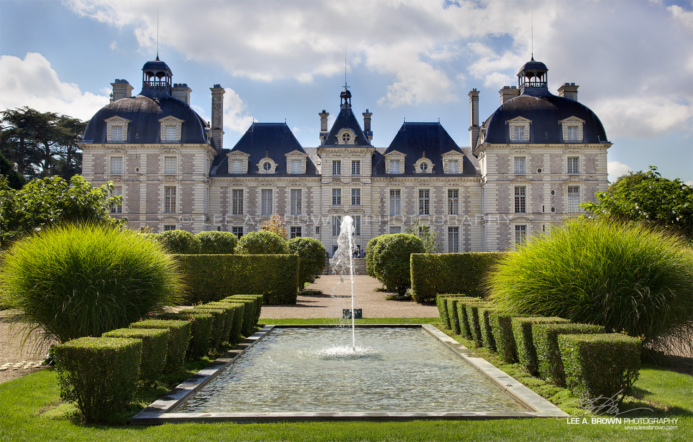
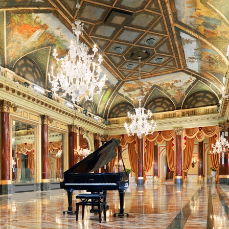
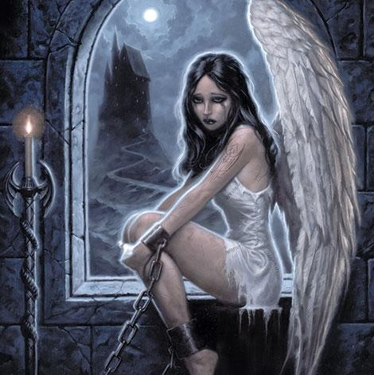
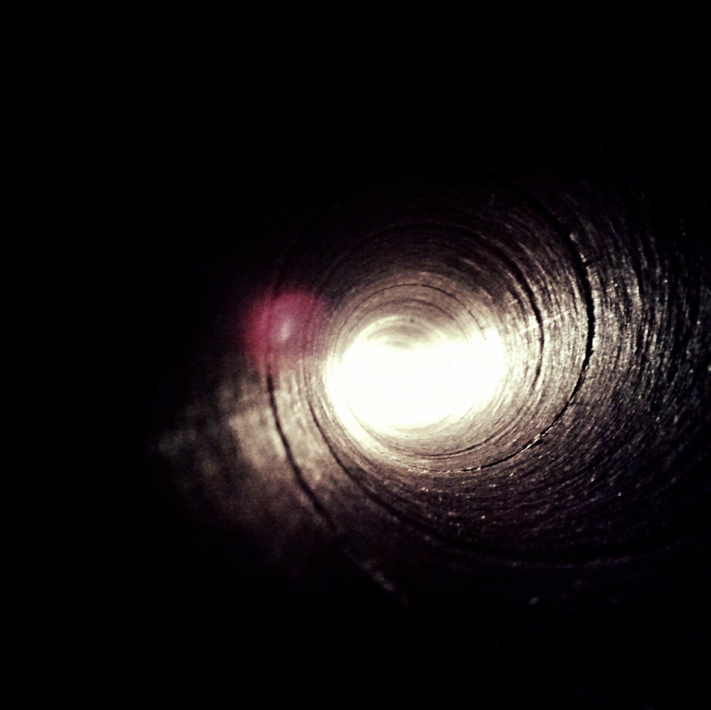
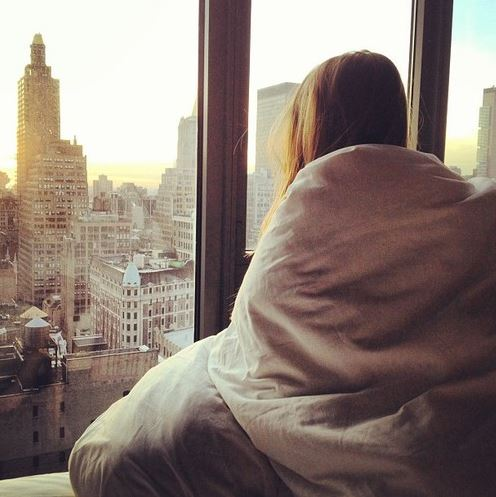

Totul a început în prima zi a stagiului trei. Iată-mă intrând în curtea
interioară imensă a Swords-ului alături de cele mai bune prietene ale mele, Diona Morland,
vampiriţă, şi Emilia deLuna, vrăjitoare. Vârcolacul Vilnius "Bărbuţă"
Rodwig, directorul şcolii şi membru al Clanului, stătea în faţa institutului,
ridicat pe o plantă uriaşă asemănătoare cu cea de floarea soarelui,
aşteptând ca toţi elevii săi să se adune în interiorul zidurilor
celui mai important pilon al societăţii elycriere.
CAPITOLUL 2
Eliberarea păsării din colivie, 8 Aprilie 2017
- Lady Allison Weaves, prinţesă a Angisului. Am înaintat până la prima
treaptă, moment în care unele persoane, văzându-mă, s-au oprit din aplaudat în
favoarea şuşotelilor. Mi-am rostogolit ochii subtil, încercând să nu par deloc
afectată. Da, nu aveam imaginea unei prinţese model, impecabilă şi pregătită
să dau gata o turmă de pretendenţi mofturoşi printr-o singură fluturare de gene,
dar mulţumesc mult pentru încurajări, băieţi!


CAPITOLUL 3
Surpriza unui bal, 9 Aprilie 2017
- Du-te! îmi grăise mama împingându-mă delicat din colţul sălii
în care mă ascunsesem de cinci minute în speranţa că voi avea ocazia să
fac vraja de dispariţie fără să fiu observată, în direcţia altui
prinţ sau conte din regiunea X a cărui încercare de a mă invita la dans îl
adusese la disperarea de a apela la mama mea pentru a ajunge la mine.
CAPITOLUL 4
Oameni cu intenţii precise, 10 Aprilie 2017
Trecuseră exact douăzeci şi şase de minute şi treizeci şi
şapte de secunde de când îmi revenisem din inconştienţă
şi mă hotărâsem să număr secundele, odată ce am
depăşit etapa de panică. Treizeci şi opt. Treizeci şi nouă.
Mi-am scuturat capul, încercând să găsesc o altă cale de a mă calma.


CAPITOLUL 5
Lume nouă sau poate nu, 11 Aprilie 2017
Îmi ţin respiraţia în timp ce uşa se deschide din ce în
ce mai larg, până să dezvăluie complet o statură înaltă,
învăluită în lumină, vag cunoscută mie. Dar oare de unde?
Individul face un pas în interiorul camerei astfel încât îl recunosc
imediat. Cred că glumeşti...
CAPITOLUL 6
Bun venit printre străini, 12 Aprilie 2017
Mă instalasem de câteva minute într-un dormitor aflat la capătul
coridorului de la etaj, lângă cel al Isabellei şi vis-a-vis de cele ale
lui Edward şi Derek, însă tot ceea ce făceam era să nu îmi
dezlipesc ochii de pe priveliştea nemaipomenită asupra oraşului, de la
fereastrele primului etaj al apartamentului.

CAPITOLUL 7
Intrare într-o normalitate anormală, 13 Aprilie 2017
Viaţa este presărată la fiecare pas cu obstacole care ne pun toată
fiinţa într-o cumpănă ce seacă din noi fericirea, speranţa
zilei de mâine, libertatea de a putea să ne imaginăm un viitor luminos,
înconjuraţi de cei dragi în locul nostru intim, ce înainte desemna un
rai pe pământ. Şi oare au aceste piedici vreun rol? Poate că da, iar
noi suntem doar prea orbi să îl recunoaştem. Sau poate suntem doar amuzamentul
preferat al unor forţe superioare.